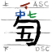
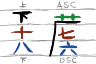

The Guqin, or Chinese Zither, has a very specialised and old form of music score, called 减字谱 (Jiǎnzìpǔ), or "reduced character score". One "block" in the musical score is made up of many different elements, including which string to pluck, which hui to press down, and how to pluck the string, to which hui to slide to.
If you want to read more on the history, then Wikipedia's article on Guqin Notation can tell you more. Another resource is peiyouqin, which has all the notation listed out, along with how to follow it, all conveniently in the English language. Thus, I won't be going over how it works here.
Jianzipu is usually and always handwritten, and thus can be inconvenient for typing on a computer, and also reading, since it can get very dense and hard to parse at low resolutions. No one I know of has ever made a font for it - until of course, now.
For what I've done is made a font, or rather, tacked glyphs onto Noto Sans SC, which allow a user to be able to actually type (the vast majority of) Guqin notation. Now, considering that there are 7 strings and 13 hui, with fractions too, and about a dozen different playing techniques, how the hell was I going to do such a thing?
The basic idea was to use ligatures. Ligatures are when you take a consecutive pattern of characters, and replace them all with one single character. This
is usually used in serif fonts to have clean joins, such as for fi and ffi. I would have specific marker symbols, such as \ | / -, which would
be the start of the ligature, and then a code afterwards to display the Jianzipu character. This would allow normal typing in both English and Chinese to
be uninterrupted, whilst still being able to use Qin ligatures when required.
Trying to make every single possible occurence of a Jianzipu block would be ridiculous, impractical, and simply mad. It takes enough work to make fonts already, even if you can just rip some chinese characters to use as a basis. So what I decided on is to break a block into its consitutent parts.
For Jianzipu, the most commonly used block is one to indicate plucking of a string, whether it be 挑、勾、抹 or whatever. It consists of a number, the main action, and then either 散 or a finger position. Optionally, on top you can have a 泛音 indicator, taking the maximum number of components to 5 (since the finger position has both a finger and a position). Somehow, these five blocks should all be representable without making tens or hundreds of different glyph codes.
For the main right hand action, every possible action requires the number to have a different placement - 散 is different from 抹 from 抹勾 - and so these would have to be indidually made for each string, 7 in total per. Not ideal but oh well, 7 is quite doable. That's the first two compoenents done. However, I can't be doing that for the finger positons, the "relaxed" 散音, and a possible "resonant" 泛音 marker on top. The way I solved this, simply put, is by using negative kerning. That is, kerning the ligature so that it overlaps with the previous character.
Now, imagine those three-lined workbooks you used to practice your handwriting in. (If your language doesn't do that, then never mind.) The bottom line is where the descender goes, the top line is where the ascender goes. Ascenders are just the long uppy things like on a d and the descenders likewise are long fally things like on q.
 The bottom two thirds of the glyph are reserved to for the "main block", whilst the top third is for the finger position. Then, any other modifiers go over the third line, and so it is recommended to use a healthy line spacing of at least 1.5. We thus only need one combining modifier for every component, and only one of each glyph is needed. We however then run into another problem - the hui positions. There are 13 hui (徽) positions, each with ten fractions, and if I were to do every single one of them, that'd be 130 glyphs. Way too much. Luckily, many positions are not notes, and there's only so many standard hui positions, and so (including all whole numbers on top) I only need to make about 20something, which is much more managable. Of course, this comes with the downside of non-standard positions being disallowed, however, at that point might as well add it yourself - or if it's really common and I havent found out about it, make a pull request and I can get it added in.
Those positions then (not including whole number resonant positions) are:
5.6, 6.4, 7, 7.3, 7.6, 7.9, 8.5, 9, 10, 10.8, 12.3, 13.1
For slides (上/下) the main character is the 上/下, which goes on the top position. Then, the numbers are added as combinators. We can't just use standard hui positions, for reasons we'll come onto soon, so I decided to, as shown in the image above, make the middle and bottom number separate components. For a whole number hui, the design states that you only use the bottom number. Thus, the middle numbers go from 1 to 13, and the bottom numbers go only from 1 to 9, with added 半 and 外.
There is one more major component to worry about, which is the "running" 历 stroke, since it usually has two numbers in it, for the two strings that one must play successively. The running stroke also uses the same number system as the slides, and it's easier to just let the user piece together numbers from different components than me making all the possible iterations, which is why the middle and bottom numbers are separated.
All other smaller characters, like 泛起、泛止、复、退、撞、etc are simply one glyph, and are easy enough. The final problem then would be dealing with "falling" 注 and "rising" 绰 indicators. The falling tone is indicated with a water radical on the left, whilst, more problematically, the rising tone is indicated by a small 卜 written normally below the finger position indicator. This, unfortunately, is where I decide to go against normal convention, and indicate the falling zone instead in the position where the resonant indicator usually goes, above the finger position. I think this is an acceptable sacrifice to make this work.
And that, roughly is it. If you've read this far you certainly must be interested - the links at the top lead to the github for the font, and a page on my site with pieces of music, written in Qin notation. Some of them may be mine, most of them are not. The font is made using a program called Birdfont, and is licensed on the open font license, like its base font Noto Sans SC.
Do note that since it is a full chinese font, it is rather large. Really rather large. That's why the Qinpu page takes a while to load in.